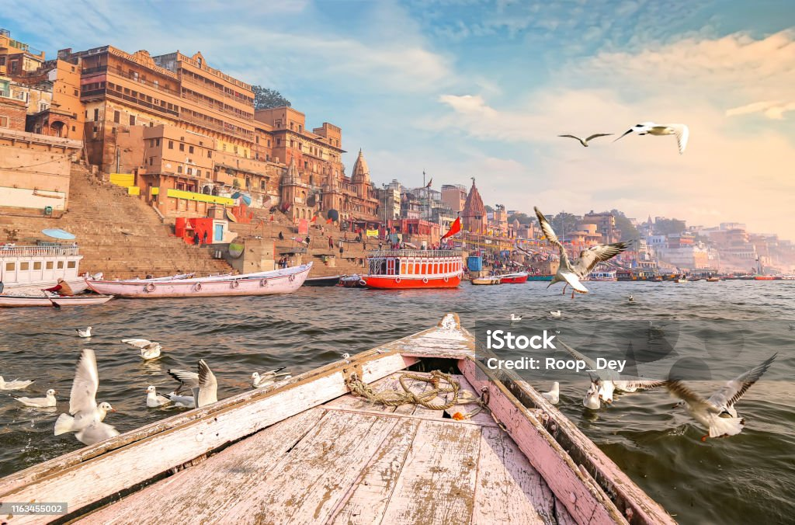

The Spiritual Heart of India
Varanasi, also called Kashi, is one of the oldest continuously inhabited cities in the world. It is the spiritual capital of India and a major center for religion, culture, and learning.

Varanasi is famous for its vibrant culture, classical music, silk weaving, and festivals like Diwali, Dev Deepawali, and Ganga Mahotsav. The city is known for its spiritual learning, yoga, and traditional art forms.
| Fact | Details |
|---|---|
| State | Uttar Pradesh |
| Population | Approx. 1.2 million |
| Famous For | Ghats, Temples, Silk, Spiritual Learning |
| Language | Hindi, Bhojpuri |